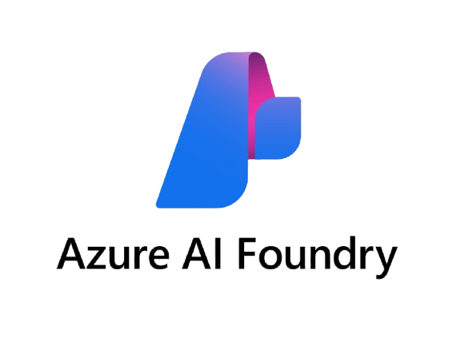

kommunikationsweg
Multi-Agent System
👤
Nutzer
"Erstelle einen Snapshot und validiere ihn"
Prompt
Routing & Planning
🧠
Orchestrator
Versteht die Anfrage · plant Schritte · wählt Agenten
Konversation
💬
Default Agent
Allgemeine Anfragen
Basis-Logik
LLM-Wissen
Produktionsplanung
⚙️
Smart Planning Agent
Snapshots · Validierung
Korrektur
Smart Planning APIs
Dokumentensuche
📄
Document Agent
Handbücher · Richtlinien
Wissensbasis
RAG / AI Search
Tools & Datenquellen
🔌
Smart Planning APIs
Snapshot erstellen · validieren
korrigieren · hochladen
☁️
Blob Storage
Snapshot-Daten
Azure Cloud
|
🔍
Azure AI Search
Vektorsuche
Embedding-basiert
📁
Dokumentationen / PDFs
Handbücher
Richtlinien · Normen
ANTWORT ↑
Ergebnis
✅
Valider Snapshot + Arbeitsbericht
Aufbereitet · verständlich · vollständig
ANTWORT AN
NUTZER
Orchestrator entscheidet den Weg
Default Agent — Reines LLM-Wissen
SP Agent — Smart Planning APIs
Document Agent — RAG / AI Search
Tool-Zugriff